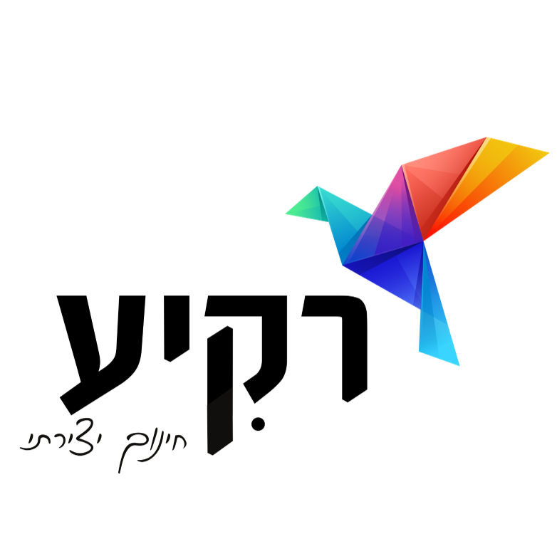
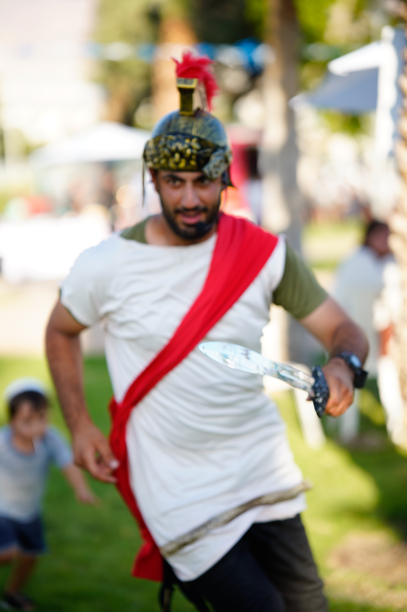
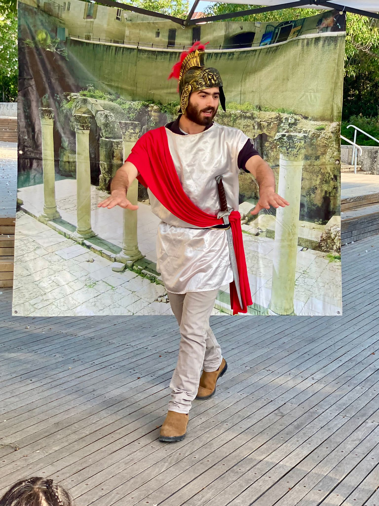

תיאטרון, חינוך וערכים – בדרך שלא משעממת אף אחד.

תיאטרון רקיע הוקם על ידי נריה צור, מתוך אמונה פשוטה: היסטוריה וערכים לא חייבים להישאר על הדף. הם יכולים לצאת לחיים, לעמוד מול הילדים, לגעת בהם ולהישאר איתם הרבה אחרי שהמסך יורד.
מה שהתחיל כרצון להביא ערך בצורה יצירתית, הפך לשתי משפחות מוצרים: הצגות "הגיע הזמן" – הפקות מלאות ומושקעות סביב מעגל השנה היהודי, ושחקני שטח – מוצר גמיש ודינמי שנכנס לתוך כל אירוע ומתאים את עצמו אליו בדיוק.
לאורך הדרך עבדנו עם בתי ספר, עיריות, מתנס"ים, קהילות, גרעינים תורניים ואתרי מורשת – תמיד עם אותה מחויבות: מקצועיות שאינה מתפשרת, לצד נאמנות עמוקה להיסטוריה ולערכים.
נאמנות להיסטוריה ולעובדות
הפקה מקצועית מקצה לקצה
ערכים בלי להטיף
התאמה אישית לכל קהל
ריכזנו כאן את השאלות ששואלים אותנו הכי הרבה — רכזות תרבות, מנהלי אתרי מורשת ומנהלי גרעינים ועיריות.
כן. הצגות "הגיע הזמן" נכתבות מתוך התייחסות מודעת לערכי הציבור הדתי, ואנחנו שמחים לעבור על התוכן מראש מול גורם רבני או מוביל קהילתי לפני האירוע, כדי שתגיעו רגועים לגמרי.
אנחנו מגיעים מוקדם להתארגנות ובניית התפאורה, ויש לנו תהליך גיבוי מסודר לכל תרחיש. שקט תעשייתי הוא חלק בלתי נפרד מהשירות שלנו – זה בדיוק מה שאתם משלמים עליו.
מומלץ לתאם 1–3 חודשים מראש. בעונות שיא (חנוכה, פורים, יום העצמאות, בין המצרים) שווה לסגור מוקדם יותר, כדי להבטיח את התאריך והשחקנים המבוקשים.
בהחלט. אנחנו מוציאים הצעת מחיר מפורטת וחשבונית מס כדין, ורגילים לעבוד מול מערכות רכש עירוניות והזמנות עבודה רשמיות.
כן, אנחנו מופיעים גם בחוץ וגם באולמות. לאירועי חוץ נתאם מראש פתרון גיבוי למקרה של מזג אוויר קיצוני, כך שהאירוע לא יפגע.
הצגות "הגיע הזמן" מותאמות לגילאי גן חובה עד כיתה ו׳. שחקני שטח גמישים יותר ויכולים להתאים גם לנוער ולמבוגרים, בהתאם לאירוע.
זו בדיוק הייחודיות של שחקני שטח: אנחנו כותבים טקסטים על כל נושא שתבחרו ומתאימים את הדמויות בדיוק לאירוע – בין אם זו דמות היסטורית, סיפור מקומי או נושא לימודי.
המחיר כולל הפקה מלאה: שחקנים, תפאורה, תאורה והגברה בהתאם לצורך. פרטים מדויקים לפי סוג האירוע נסגרים מראש בהצעת המחיר, כדי שלא תהיו בהפתעות.

כתבו לנו בוואטסאפ ונחזור אליכם באותו יום.
דברו איתנו בוואטסאפ